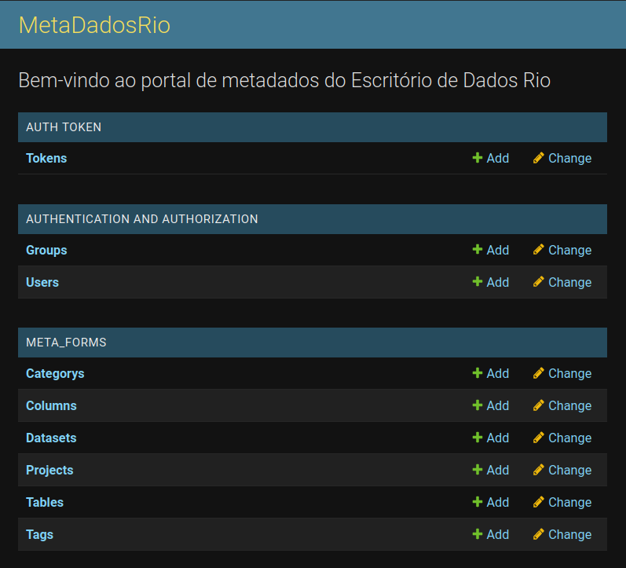
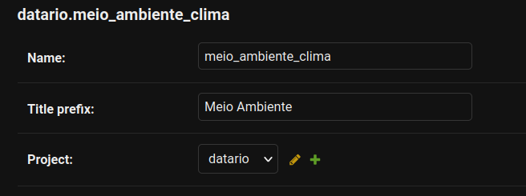
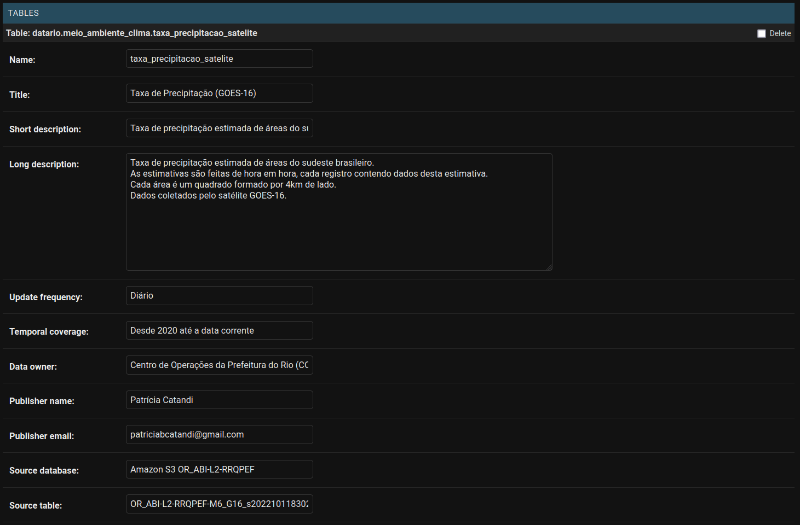
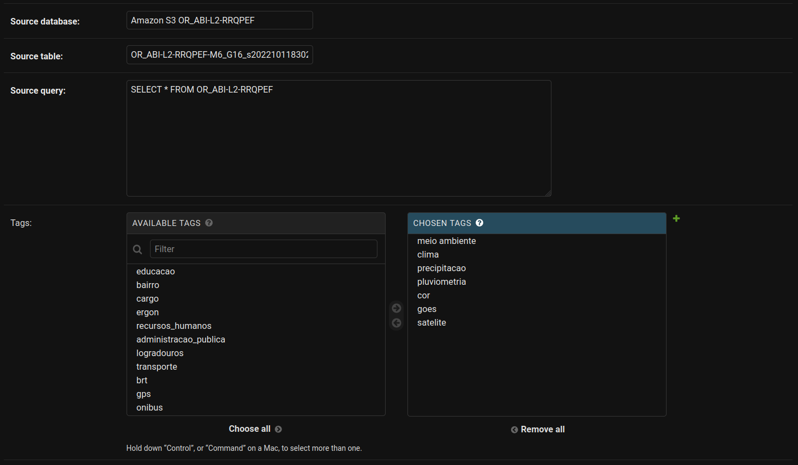
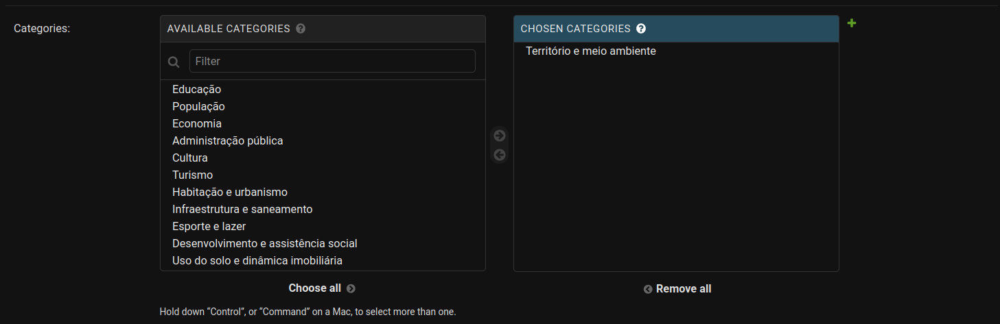
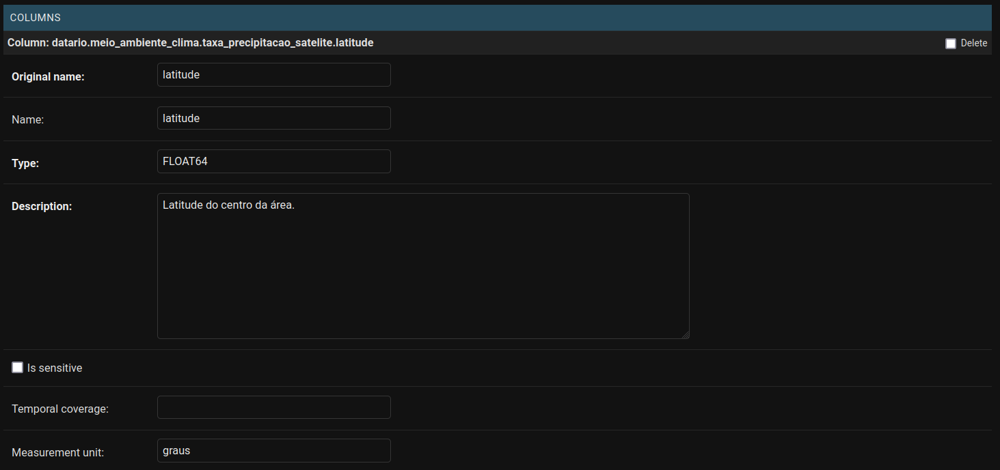
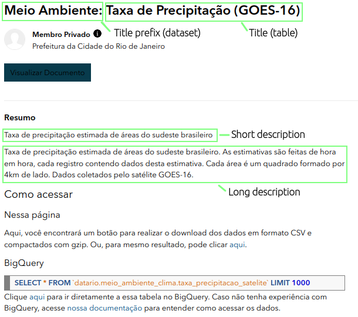
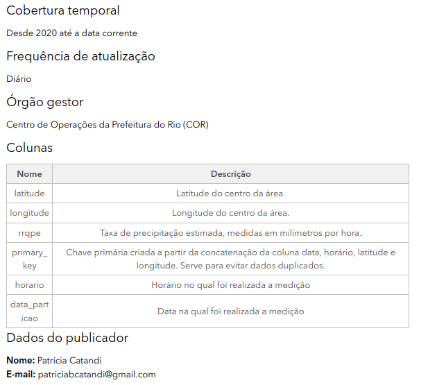

Metadados, padronização e normalização
Como estão estruturados os dados no ED?
A estrutura de dados utilizada segue a mesma hierarquia do BigQuery com project no nível mais alto, seguido de dataset e table.

Todo conjunto de dados terá obrigatoriamente 3 níveis de identificação sendo os dois primeiros para definir o nome do dataset_id e o último para definir o nome da tabela:
| objeto | formato | exemplo |
|---|---|---|
| dataset_id | <primeiro_nivel>_<segundo_nivel>_<area ou tipo do conjunto (opcional)> | meio_ambiente_clima |
| table_id | <nome da tabela> | taxa_precipitacao_satelite |
Nesse nosso caso em que temos uma tabela que contém informações sobre a quantidade de precipitação obtida por satélite a nomenclatura para acessarmos os dados dentro de um determinado projeto seria meio_ambiente_clima.taxa_precipitacao_satelite onde meio_ambiente se refere ao primeiro nível, clima ao segundo e taxa_precipitacao_satelite é o nome da tabela que corresponde ao terceiro nível.
Quais as melhores práticas na criação das tabelas?
Nome do dataset_id e table_id
Para nomeação de objetos no datalake seguimos as melhores práticas detalhadas do Vocabulário Controlado de Governo Eletrônico - Ministério do Planejamento (VCGE). Para saber quais as possibilidades de nomeação acesse essa tabela.
Restrições:
- Ter sempre 2 níveis de identificação do dado: dataset_id (nome do conjunto) + table_id (nome da tabela)
- Ter todas letras minúsculas (inclusive siglas), sem acentos, conectados por _
- Não incluir conectores como de, da, dos, e, a, em, etc.
- Sempre que possível utilizar singular
- Não é permitida alteração do primeiro nível do VCGE.
- Não deve ser utilizado como segundo nível “Outros…”. Caso a categoria do seu conjunto não se encaixe em nenhuma das opções, é permitida a sugestão de novos termos desde que aprovado na reunião de Gestão do Datalake. (ex: administracao_processo).
- Nenhuma palavra deve ser repetida no dataset_id ou tabel_id (ex: educacao_basica.turmas deve ser usado, e não educacao_educacao_…)
- O dataset_id pode ser ser nomeado como "dados_mestres", não seguindo o VCGE, caso a tabela em questão seja uma referência para outras tabelas de outros sistemas incluídos no datalake.
Referências:
- Manual de estilo e diretrizes de dados - Documentação (Base dos Dados)
- Ontologia SMTR
- VCGE | VCGE versão resumida | VCGE versão detalhada
Nome e ordem das colunas
O nome e a ordem das colunas tem que respeitar o mesmo padrão descrito nas partes "Nomeação de variáveis" e "Ordenamento de variáveis" do Manual de estilo e diretrizes de dados - Documentação (Base dos Dados)
Conteúdo das variáveis
Sobre o conteúdo das colunas deve-se respeitar o mesmo padrão descrito nas partes "Tipos de Variáveis", "Limpando STRINGs", "Formatos de valores" e "Quais variáveis manter, quais adicionar e quais remover" do Manual de estilo e diretrizes de dados - Documentação (Base dos Dados)
Particionamento
Tabelas grandes ou com grande potencial de crescimento devem ser particionadas a fim de melhorarmos o desempenho de consulta e reduzir os custos.
Em geral, o particionamento é feito sobre o valors de uma data criando-se três colunas novas cujos nomes são dados por: ano_particao, mes_particao, data_particao e que possuem os respectivos formatos 'YYYY', 'MM', 'YYYY-MM-DD'.
Datas nulas em coluna de particionamento - caso a coluna utilizada para particionamento seja nula, preencher esses valores pela Unix epoch (1 de janeiro de 1970).
Em caso de necessidade de particionamento por outra coluna consultar o tópico "Particionamento de tabelas" no Manual de estilo e diretrizes de dados - Documentação (Base dos Dados).
O que são Metadados e para o que servem?
Metadados são informações utilizadas para descrever tanto sobre do que se trata a tabela em específico quanto para descrever em profundidade o que são cada uma das suas colunas. Eles servem para facilitar o entendimento e a utilização dos dados. Dessa forma, para cada tabela criada precisamos especificar através dos metadados o que cada coluna significa e o seu formato.
Aqui no Escritório de Dados armazenamos os seguintes campos no metadados:
- A nível de tabela:
- descrição geral sobre o que são os dados;
- tags que ajudam a encontrar a tabela;
- categoria da tabela;
- orgão da prefeitura de origem dos dados;
- quem é a pessoa responsável pela publicação;
- frequência de atualização da tabela;
- entre outros...
- A nível de coluna:
- descrição de cada uma das colunas
- formato em que os dados estão salvos
- unidade de medida (se necessário)
- flag se a coluna tem dados sensíveis
E essas informações estão salvas no meta.dados.rio.
meta.dados.rio
O meta.dados.rio é o nosso repositório oficial de metadados.

Os valores a serem preenchidos em cada campo devem ter sido validados por um profissional da IPLAN. Para mais detalhes olhar a documentação sobre o "Fluxo de Aprovação" descrito nesse tutorial.
Como criar uma conta/ acessar?
Como preencher?
Toda vez que criamos uma tabela nova precisamos entrar no meta.dados.rio e preencher os campos de Datasets (caso ele não exista), Projects (caso ele não exista) e Tables.
Dentro de Datasets podemos criar um dataset_id novo utilizando o botão ADD Dataset ou modificar alguma coisa ao clicar no nome do nosso dataset de interesse.
As principais informações que precisamos preencher sobre o dataset são:
- Name: qual o nome desse dataset. Tem que ser o mesmo nome definido no BigQuery.
- Title prefix: prefixo que aparecerá na frente do nome de cada tabela no data.rio
- Project: qual o nome do projeto que ele pertence dentro do BigQuery. Para ter essa tabela publicada no data.rio é necessário setar esse valor para 'datario'.

Para preencher as informações sobre a tabela criada podemos continuar no mesmo link do Dataset ou entrar na página Tables. Aqui, os campos a serem preenchidos são:
- Name: nome da tabela. Tem que ser o mesmo nome definido no BigQuery.
- Title: o título da tabela que irá aparecer no data.rio após o prefixo definido no dataset.
- Short description: resumo sobre os dados disponibilizados nessa tabela.
- Long description: descrição detalhada sobre os dados disponibilizados nessa tabela (limite de 200 caracteres).
- Update frequency: qual é a frequência de atualização desses dados (Anual, Mensal, Semanal, Diária, Nunca).
- Temporal coverage: qual a última data de atualização (ex: Até data corrente).
- Data owner: Órgão responsável pela criação e disponibilização dos dadaos.
- Publisher name: Nome da pessoa responsável pelo pipeline dos dados.
- Publisher email: E-mail da pessoa responsável pelo pipeline dos dados.
- Source database: Base de dados de origem.
- Source table: Nome da tabela de origem dos dados.
- Source query: Query utilizada na extração dos dados.
- Tags: Tags para facilitar a busca desses dados no data.rio. As tags obrigatórias estão relacionadas ao orgão que disponibilizou os dados (Ex: cor, alertario, sme, ...), sistema que originou os dados (Ex: comando), sinônimos, nome do dataset_id e table_id. As tags devem ser escritas em minúsculo, sem acentos e o espaçamento de palavras dado por _. Automaticamente são geradas as tags: escritorio_de_dados, datalake
- Categories: selecionar quais categorias se adequam aos seus dados.



Já para o preenchimento dos metadados das colunas os campos obrigatórios são:
- Original name: nome original da coluna. Tem que ser o mesmo nome definido no BigQuery.
- Name: nome que irá aparecer no data.rio.
- Type: se essa coluna é um INTEGER, FLOAT, DATE, DATETIME ou STRING.
- Description: Descrição detalhada do que representa essa coluna.
- Is sensitive: se essa coluna possui um dado sensível que não deve ser publicado.
- Measurement unit: unidade do dado (se fizer sentido).

Onde ficam disponibilizadas as informações preenchidas?
Quando o projeto selecionado é o datario, os metadados são disponibilizados no data.rio.
Nas figuras abaixo é possível verificar como ficaram os metadados dentro do data.rio com destaque para os campos Title prefix, preenchido nas informações do dataset, Title, Short e Long description que são preenchidos nas informações da tabela.

